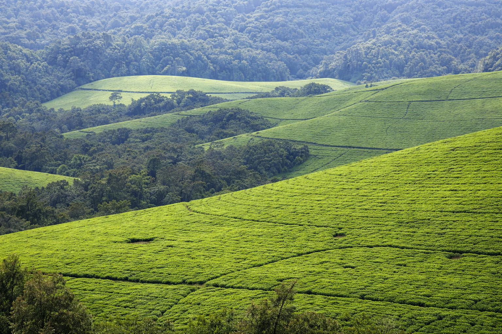

Bujumbura
75k
Lac Tanganyika
Eaux bleues et plages de sable blanc pour la détente et le Mukeke

RetourLe pays aux mille collines et aux eaux sacrées du Tanganyika
Petit par sa taille mais immense par sa beauté, le Burundi est une perle nichée au cœur de l'Afrique. Surnommé "Le pays aux mille collines", il offre des paysages d'une luxuriance exceptionnelle, dominés par les eaux majestueuses du lac Tanganyika, le deuxième lac le plus profond au monde. C'est une terre de traditions vivantes, illustrées par les tambours sacrés de Gishora, et une nature sauvage préservée dans les parcs de la Ruvubu et de la Kibira. Le Burundi vous accueille avec la chaleur de son peuple et la promesse d'une aventure intime et authentique.
Découvrez les 15 sites emblématiques du patrimoine burundais
Eaux bleues et plages de sable blanc pour la détente et le Mukeke

Patrimoine immatériel de l'UNESCO, le rythme sacré de la nation

Le plus grand parc du pays, refuge pour les buffles et les hippopotames

Un ensemble spectaculaire de cascades au milieu d'une forêt luxuriante

La source la plus méridionale du fleuve mythique, marquée par une pyramide

Forêt de montagne primaire abritant des chimpanzés et des cercopithèques

Capitale politique et siège du Musée National abritant les reliques royales

Lieu historique de la rencontre des deux célèbres explorateurs en 1871

Zones humides et observation de crocodiles et d'oiseaux à deux pas de Bujumbura

Le "Gouffre d'Allemagne", faille spectaculaire offrant une vue plongeante sur la Kumoso

Le point culminant du Burundi (2 670m), paradis des randonneurs

Lac Rwihinda : sanctuaire pour des milliers d'oiseaux migrateurs
Observation privilégiée des chimpanzés dans un cadre forestier préservé
Musée Vivant de Bujumbura : zoo et jardin botanique historique
Place de l'indépendance et monuments royaux de l'ancienne capitale
Le battement de cœur sacré du Burundi.
La culture burundaise est indissociable du tambour (Ingoma), véritable âme de la nation. Autrefois symbole du pouvoir royal, le tambour est aujourd'hui classé au patrimoine mondial de l'UNESCO. Les tambourinaires de Gishora perpétuent un art de la scène athlétique et musical unique au monde. L'identité du pays est aussi forgée par son histoire royale, ses contes transmis oralement et ses danses gracieuses qui célèbrent la beauté des mille collines et l'hospitalité légendaire du peuple burundais.
Le battement rituel de l'Ingoma, symbole d'unité, de fertilité et de souveraineté nationale.
L'héritage des rois (Bami) qui ont gouverné le Burundi pendant des siècles avec sagesse et tradition.
Une géographie sacrée où chaque colline a son histoire, son clan et son identité propre.
La tradition de la sagesse et de la justice locale portée par les notables respectés de la communauté.

L'artisanat d'exception du Burundi. Des cafés de haute altitude aux vanneries royales Agaseke.
 Artisanat
Artisanat
Vannerie traditionnelle emblématique à couvercle pointu, symbole de paix et d'élégance féminine.
 Gourmet
Gourmet
Café Arabica de haute altitude primé mondialement pour ses notes florales et sa finesse aromatique.
 Bio
Bio
Thé noir pur issu des plantations d'altitude en bordure de la forêt de Kibira, riche en saveurs.
Réplique artisanale du tambour sacré en bois local et peau tendue, objet de décoration unique.
Huile de palme rouge artisanale pure, essentielle pour la cuisine authentique burundaise.
Statue finement sculptée représentant les symboles de la monarchie et de l'unité nationale.

Bujumbura, Bord du Lac

Bujumbura, Vue Panoramique

Bujumbura, Luxe & Sport

Bujumbura, Charme intime

Bujumbura, Business & Confort

Gitega, Confort au Centre
La cuisine burundaise est une fête pour les sens, mettant à l'honneur les trésors du lac Tanganyika et les produits généreux de la terre.
Le poisson noble du lac Tanganyika, grillé avec soin, une spécialité incontournable de Bujumbura.
Petites sardines du lac, frites pour être croustillantes, servies avec une sauce piquante.
Gros poisson du lac, fumé artisanalement pour une saveur boisée intense.
Bananes plantains frites ou grillées, le goûter ou l'accompagnement préféré.
Haricots rouges mijotés longuement avec des oignons et de l'huile de palme.
Feuilles de manioc pilées et cuites avec du poisson séché ou de la viande.
Plat consistant de bananes à cuire mijotées avec de la viande de chèvre.
Viande de chèvre marinée et rôtie lentement au-dessus des braises (Brochettes).
Riz parfumé servi avec un poisson du lac cuisiné en sauce tomate épicée.
Les avocats du Burundi sont réputés pour leur taille et leur onctuosité incomparable.
Dégustés frais ou en jus, une explosion de fraîcheur tropicale.
Boisson traditionnelle fermentée, servie dans les cérémonies et les fêtes.
Vibrez au rythme des tambours et célébrez les traditions millénaires du Burundi.
Grand rassemblement des tambourinaires à Gitega pour célébrer l'Ingoma (Novembre).
Défilés culturels et festivités nationales dans toutes les provinces (1er Juillet).
Célébration annuelle de la musique, du théâtre et des arts plastiques burundais.
La période idéale pour le tourisme. Le ciel est dégagé, les températures sont agréables et les routes sont faciles d'accès pour visiter les parcs nationaux.
Le paysage devient intensément vert. C'est la période idéale pour admirer les cascades de la Karera à leur débit maximum et pour l'observation des oiseaux.
Le Burundi est accueillant. Vigilance normale requise à Bujumbura. Évitez les déplacements nocturnes en province sans guide.
Zone de paludisme. Prophylaxie recommandée. Vaccin Fièvre Jaune obligatoire. Buvez de l'eau en bouteille.
Visa obligatoire. Peut être obtenu à l'arrivée (Visa on arrival) ou en ligne (e-Visa) selon votre nationalité.
Franc Burundais (BIF). Le Dollar US est largement accepté. Les cartes de crédit sont utilisables dans les grands hôtels.
Expert Culture & Tambours
Passionné par le patrimoine de Gishora, Jean-Claude vous fera découvrir la force spirituelle des tambours sacrés.
Experte Parcs & Randonnée
Spécialiste de la forêt de Kibira et de la Ruvubu, Alice vous guidera sur les sentiers les plus secrets du Burundi.
Guide Lac & Gastronomie
Natif des rives du Tanganyika, Samuel vous fera découvrir les meilleurs spots de Bujumbura et les secrets du Mukeke.